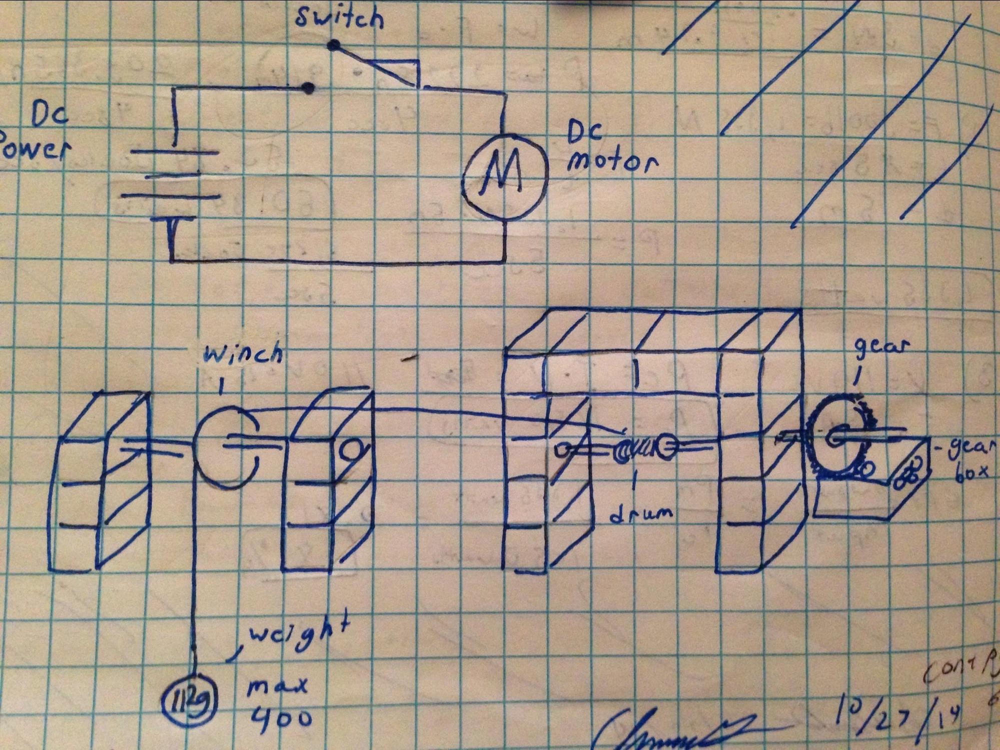

Project 1.1.5 Mechanical Winch
Project Manager: Me (Aviram Bhalla-Levine)
Project Members: Christopher Garduno, Lemar Popal, Sarang Vadali
Class: Principles of Engineering
Date: 31 October 2014
Summary: In this project, my team was asked to resolve a problem of lifting heavy weights at a construction site. We were required to design, build, and test a prototype winch for lifting. We were also asked to write a program to simulate the winch.
My Role: In the creation of this prototype, I was responsible for the program and most of the documentation. I wrote the design brief (a standard engineering procedure for defining problems) and the design statement (a standard engineering procedure for outlining solutions to problems). I also wrote and created the interface for the code. Lastly, I edited the calculations and wrote the final design paragraph. This was challenging because to fulfill the requirements, the simulation must have worked in a similar way to real life. The relations between voltage, mass, drum size, and motor speed all were relevant in writing the code for the simulation.
What I learned: As a coder, I learned how to rotate entities, how to create a line between entities, how to add formulas into movement, and how to end code loops under certain conditions. As a project manager, I improved on my skills in managing people. I was able to guide everyone on the team to finish the tasks assigned to them in time to effectively complete and then present our design. I made sure everyone stayed on task well and kept my team productive.
Images:
A simulation of the Mechanical Winch.
A brainstorming sketch for this project.